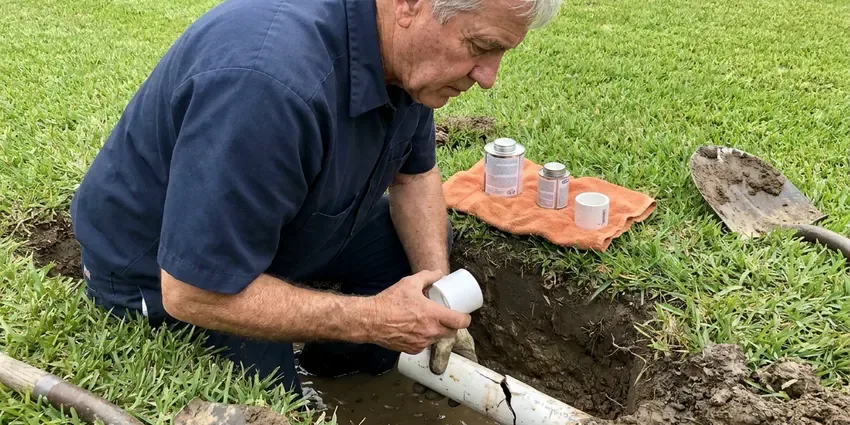

New Construction Plumbing in Blaine, MN
Building in Blaine, MN? Our crews handle underground, rough-in, top-out and trim so the next trade is never waiting on plumbing.
- Fast Project Consultations
- Long-Life Materials
- Inspection-Ready at Every Phase
- Fast Bids From Your Plans

Build on Solid Plumbing: New Construction Plumbing in Blaine, MN.
Get an itemized new construction plumbing quote from CNV Plumbing within the week.
New Build Plumbing Contractors in Blaine, MN
CNV Plumbing sizes and routes new construction plumbing around the conditions in Blaine, MN. Extremely cold, long winters are the biggest stress on plumbing in Minnesota, and incoming water stays cold for much of the year. It changes how deep we bury the water service and whether a supply line can run in an outside wall. We insulate any attic run.
Some of what we do:
- PEX-A home-run manifolds and copper mains sized for your fixture count.
- Rough-in plumbing for new homes and light commercial work.
- Under-slab drain, waste and vent systems with sleeved slab penetrations.

Additional Plumbing Maintenance Services in Blaine, MN
Our maintenance and specialty plumbing services in Blaine, MN catch small problems before they become emergencies.


Customers
Why Choose CNV Plumbing for New Construction Plumbing in Blaine, MN?
Site cleanliness counts more than people think. We haul off PEX scraps and glue cans at the end of each day. The electrician should never have to clear a pile of our pipe ends to reach a panel location or trip over a coil of PEX in the hall. Small thing, but supers notice.
- On-Time Phases, We coordinate with framers and electricians so plumbing never holds up the next trade.
- Tested Before Cover, Drains get a water or air test and supply lines get a pressure test before we call the inspector.
- Experienced Team, Our crews have plumbed homes on slabs and crawlspaces for years and know where each one goes wrong.
Citywide Coverage
We plumb new builds in every part of Blaine, from infill lots in older blocks to new subdivisions on the edge of town. Infill lots bring surprises. The old lateral may be shallow clay in an unmarked spot, which is why we find it before we set the drain elevation.
Experienced Team
Every plumber on a CNV Plumbing crew holds a license or works directly under one. No apprentice runs a job alone. A licensed plumber makes the layout calls and checks each crimp ring before the inspector is called.
Safety-First Approach
We follow OSHA rules on every site. Our crews wear eye protection and cut gloves on every job. Every gas joint gets leak solution and a pressure test before the meter is set, and no line is left open.
Trusted Certified Blaine Plumbing Services Professionals
At CNV Plumbing, we are proud to offer certified plumbing services throughout Blaine, MN. Those papers on the wall mean something. Every repair, install and maintenance visit follows strict safety and quality rules, and the plumbers doing the work carry recognized industry credentials.
Call Us Now PHCC Plumbing Contractor Recognition
PHCC Plumbing Contractor Recognition Better Business Bureau (BBB) Accreditation
Better Business Bureau (BBB) Accreditation Angi Certified Pro
Angi Certified Pro ISO 9001 Quality Management Certification
ISO 9001 Quality Management CertificationCode-Ready New Construction Plumbing in Blaine, MN
Commercial New Construction Plumbing in Blaine, MN
Commercial and multifamily jobs run on stamped engineering drawings, so our role is to build what the engineer specified and flag conflicts early. Most of these plans call for backflow assemblies and trap primers, plus a grease interceptor for food service. Submittals come first. We send cut sheets for review before ordering fixtures.

Underground and Under-Slab Plumbing in Blaine
Underground work sets the drain, waste and vent layout that every fixture in the house relies on. Basements are the norm, so drain tile, sump pumps and foundation drainage are central to keeping homes dry. We trench, bed the pipe, and set stubs to the form boards so they come up exactly where the plans show. A stub two inches off can end up under a bottom plate. The whole underground holds a water test with a standpipe before any concrete goes in.
Light Commercial Plumbing for New Construction in Blaine, MN
Retail suites and offices usually need ADA restroom layouts, a mop sink and a backflow preventer on the domestic line. We set carrier fittings for wall-hung fixtures and rough in at the heights the accessibility standard requires. Backflow testers certify the assembly. We schedule that test so the report is ready before the certificate of occupancy inspection.
Commercial and Multifamily New Construction in Blaine
Small commercial buildouts and multifamily projects often require engineered drawings and backflow testing. Food service adds a grease interceptor. Stacked wet walls keep multifamily runs short, and every pipe through a rated wall or floor gets a listed firestop. The firestop gets checked at rough.
Rough-In Plumbing Services in Blaine
Rough-in covers every pipe that ends up inside a wall or floor. Holes through bearing studs stay within the framing code limit, usually 40 percent of the stud width. Vents go up through the roof. Every trap arm is sized and sloped for the distance to its vent.
Rough-In and Top-Out Plumbing in Blaine, MN
Once framing is up, our crew runs supply and vent lines through the walls and attic. Every stub-out for sinks, showers and appliances is set to the cabinet and tile drawings. Nail plates protect pipe near stud faces. Shower valves get set to the finished wall depth the tile setter gives us, which saves cutting tile around a trim plate that sits too deep.
Fixture Installation and Finishing in Blaine, MN
Final trim is the visible part, so we take our time with it. Caulk lines matter here. We level each toilet, set faucets before backsplash tile when the schedule allows, and recheck every supply after an hour with water on. Final inspection follows once fixtures are in.

Water Heater Installation for New Builds in Blaine
Picking the water heater during design avoids rerunning gas or vent piping at trim. A 50-gallon tank covers most three-bedroom homes. Larger homes with soaking tubs or multiple showers often go tankless, which needs a bigger gas line, often 3/4-inch or more, and a dedicated vent path. Expansion tanks and drain pans go in where code requires.
New Construction Plumbing Near Me in Blaine, MN
Local builders send us repeat work because we show up on the booked day. No-shows cost builders money. Most of our new construction calls come from supers we have worked with before. They know we test before we call the inspector and leave the site clean, which is less common in this trade than it should be.
Your framing crew should never sit idle waiting on a plumber. Because our crews are nearby, top-out can usually begin the same morning that the framing inspection clears. An idle day still costs the builder.
CNV Plumbing at a Glance
- Fully licensed plumbing team covering Blaine, MN
- Same-day appointments and 24/7 emergency response
- Upfront, flat-rate pricing before work begins
- 4.8-star rated by 501+ Minnesota customers
Blaine Map
Blaine Information
- Population
- 73,774
- Area codes
- 612/507/320
- Service area
- Blaine and towns within a 40 mile drive
- Nearby
- Coon Rapids, Brooklyn Park, Maple Grove, Minneapolis
Pipe and layout decisions made before the slab is poured decide how the house performs for decades. Scale buildup shortens water heater life and clogs showerheads, which is why water softeners are so common in the state. Supply material and any softener loop get planned for it.
Talk to a Plumber
Reach out to CNV Plumbing for honest, reliable plumbing from people who know the trade in Blaine, MN.
Our Specialized Plumbing Services in Blaine, MN
At CNV Plumbing, you get every kind of plumbing service from one company across Blaine, MN. From leak detection to full system installs, our team works fast and charges fair prices on homes and commercial properties alike. Here are the core services we offer:


How We Plumb a New Build in Blaine, MN
We plan our process around your build schedule, phase by phase.
Request a Quote
Call (612) 712-9569 or send your plans and fixture schedule. We return a bid that breaks out each phase.
Phase Scheduling
We set dates for each phase around your concrete and framing schedule. You get one point of contact.
Install, Test and Trim
Our crew installs each phase, tests it and meets the inspector. At trim we set fixtures and test every connection.
Frequently Asked Questions About New Construction Plumbing in Blaine
Most new single-family homes in the Blaine area cost between $12,000 and $25,000 to plumb, with larger custom homes running higher. Each added bathroom adds several thousand dollars. Gas piping and tankless heaters push it up. Our bid is fixed per phase, so the number you sign is the number you pay unless the plans change.
The term is written into your contract before work starts. Our labor and the fittings we provide are covered. Fixtures, water heaters and PEX systems carry their own manufacturer warranties, and we register water heaters in the owner's name at final so the claim process is simple later.
We handle the plumbing permit work and inspections on our scope. Your builder usually pulls the main building permit. We book every plumbing inspection, meet the inspector, and clear corrections before the next trade needs the wall.
Expect plumbing to touch the schedule three times. The under-slab work runs one to three days. Top-out runs three to five days, then trim needs one or two days after cabinets and tile are done. Inspections add a day each.
Basements are the norm, so drain tile, sump pumps and foundation drainage are central to keeping homes dry. Soil movement works on any pipe buried under concrete. We bed drain lines in sand or gravel, sleeve every pipe that passes through concrete, and use flexible PEX for the water service where code allows it. Sleeves are cheap.
Underground plumbing on a typical house takes one to three days. Plan on three to five days for top-out and a day or two for trim. The calendar time is longer, because each phase waits on concrete, framing, inspection or cabinets, so the plumber is on and off site over three to six months. Weather moves it too.
Rough-in on a typical house takes one to two weeks of crew time, spread over the build. Underground runs a day or two before the pour. Top-out follows framing at three to five days, and trim waits for cabinets and counters. Trim is one or two days.
Some jurisdictions let owner-builders plumb a home they will live in. Permits and inspections still apply. Inspectors apply the same code, and a failed underground can cost more in delay than hiring it out. Gas piping often requires a license.
What Our Customers Say About Our Plumbing Experts

Patricia H.
We had a slab leak that two other companies could not find. CNV Plumbing located it in under an hour with a listening device. They rerouted the line through the attic instead of breaking up the floor, so we kept our kitchen tile.
Slab Leak Repair · Maple Grove, MN
Nathan E.
Our tankless heater kept throwing an error code and shutting off mid shower. The tech flushed the heat exchanger, which was full of scale, and replaced a bad flow sensor. Hot water has been steady for half a year now.
Water Heater Repair · Coon Rapids, MN
Brian W.
I smelled gas behind the dryer and called right away. The plumber found a corroded flex connector, replaced it, and pressure tested the whole line before turning the gas back on. He let me watch the gauge hold steady for fifteen minutes.
Gas Line Repair · Plymouth, MNAngela D.
Our sump pump quit during a storm and the water was an inch from the basement carpet. CNV Plumbing put in a new pump with a battery backup that same evening. We have had two heavy rains since. It kicked on both times.
Sump Pump · Maple Grove, MNCarlos V.
Our house still had galvanized pipe, and upstairs the shower was a trickle. The crew repiped everything in PEX over three days and patched every drywall hole before they left. The pressure difference is night and day.
Repiping · Brooklyn Park, MN
Marcus H.
Grease from the fryer line kept clogging the kitchen drain at my diner. CNV Plumbing hydro jetted the line after closing, showed me the buildup on camera, and set us up on a quarterly cleaning so it does not catch us on a Friday again.
Drain Cleaning · Minneapolis, MN